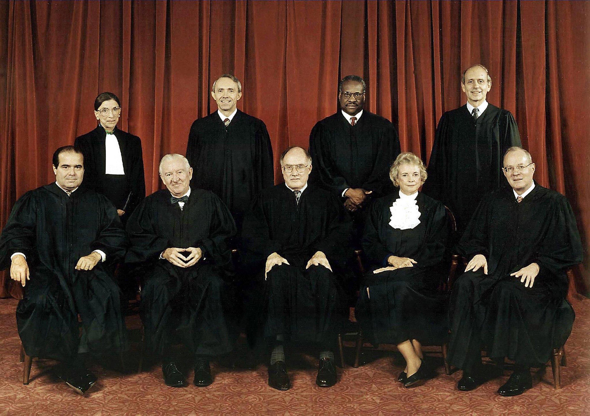

| Roper v. Simmons (2005) Supreme Court of the United States |
| Home | Sources | Quiz |
Supreme Court cases and rulings set a standard for cases that come through the court system. However, a new case can easily change prior rulings. That is true in the case being highlighted here. The case that will be covered throughout is Roper v. Simmons (2005). This case is responsible for changing the age limit for capital punishment, also known as the death penalty. According to Death Penalty Information Center, 24 states still have the capital punishment available. Roper v. Simmons (2005) takes place in the state of Missouri, which is on the list of 24 states. So how did this case reach the Supreme Court? Let's start from the beginning.
Christopher Simmons enlisted his two friends, Charlie Benjamin and John Tessmer, to assist him to rob and possibly murder someone. This conversation takes place in 1993 where Simmons is 17 years old, Benjamin is 15 years old, and Tessmer is 16 years old. The crime was premeditated by Simmons. Out of the three boys, only Simmons and Benjamin carried out the plan. Originally, Simmons was going after a man named Brian Moomey, but that is when Tessmer backed out. From there, the plan changed. It was the middle of the night and the boys found the home of Shirley Crook, a 46-year-old woman and the victim in this case. Her home was across the street from Moomey's. A window was cracked and they snuck in, planning to rob the home. Unfortunately for Crook, Simmons and her knew each other from a previous interaction and she recognized him. This is when Simmons changed course and decided to carry out his original plan, kidnapping someone and ultimately pushing them off a bridge to their death. He tied her up with duct tape and took her to Castlewood State Park, near a railroad trestle. This is where Simmons and Benjamin pushed Crook into the Meramec River, bound by cables, towels, and tape. From this point, the boys returned and Simmons visited Moomey, the man who he was originally planning to attack, and told Moomey about what he did to Crook. During this time, Steven Crook, Shirley Crook's husband, filed a missing person's report after she did not show up to work or answer the phone that morning. Later in the day, Shirley was found by fishermen where they reported their findings to the police. Medical examiner identified her as the victim, Shirley Crook, and was reported to have almost 30 bruises and the cause of death being drowning. Sadly, she was still alive at the time of the fall. Fast forward to the next day, police receive word that Simmons and Benjamin are responsible and arrest them, both being tried as adults in court. Benjamin was sentenced to life in prison as he denied pushing Crook into the river. Simmons was sentenced to the death penalty.
The ability for this court decision for Simmons was possible by Stanford v. Kentucky (1989) where it was decided that capital punishment is only cruel and unusual punishment based on society's standards. This led to courts being able to sentence those above the age of 16 to the death penalty. Back to the present case, over the next decade, Simmons continued to appeal the decision to state and federal courts, none being successful. At this time, the case of Atkins v. Virginia (2002) was taking place so Simmons' sentence was put on hold. In Atkins v. Virginia (2002) the Supreme Court found that capital punishment was found unconstitutional against those who are mentally disabled. This decision led to Roper v. Simmons (2005). With Stanford v. Kentucky (1989), the main argument was that society did not see a problem with capital punishment against minors, but when Atkins v. Virginia (2002) deemed it unconstitutional for mentally disabled people, it showed society was changing.
In the case of Roper v. Simmons (2005), it was deemed unconstitutional on the Eighth and Fourteenth Amendments to sentence those under the age of 18 to capital punishment. It was a 5-4 decision in the Supreme Court. The decision for Atkins v. Virginia (2002) is ultimately what saved Simmons as the court realized that societal standards were changing when it came to capital punishment.
